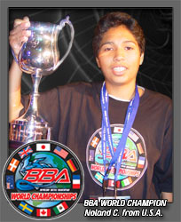

|  |
On Tuesday August 17th the Beyblade Battle Association hosted the BBA World Championships in Times Square New York. 10 of the world's top Bladers flew in to compete for the ultimate title of Beyblade World Champion. The event featured competitors from the USA, Canada, Australia, the United Kingdom, Ireland, Mexico, France, Germany and Japan.
There was also the BBA Times Square Rumble Tournament that featured 128 competitors from North America.
Throughout the day over 1000 spectators attended the event including local and international TV crews and photographers. Also in attendance was Takao Aoki the creator of the original Beyblade manga comic and executives from d-rights, Takara and Shogakukan that flew in from Japan to witness the event.
|
Monday Morning began early for the BBA World Championship competitors with an appearance on the CBS Morning Show and Fox Midday News. After a tour of the Beyblade Battle Zone there were BBA TV interviews with Beyblade voice actor Daniel DeSanto who plays the character Ray. The World Championships got underway after a thorough inspection of all competitors Beyblade Gear by Hasbro and Takara experts. Monday’s competition consisted of a Ranking Tournament where each competitor played each of the other international champions. Monday's Ranking tournament put the competitors in the following order:
| RANK |
COUNTRY |
|
| 1 |
Mexico |
|
| 2 |
UK |
|
| 3 |
Japan |
|
| 4 |
USA* |
|
| 5 |
Australia |
|
| 6 |
Germany |
|
| 7 |
France |
|
| 8 |
Canada |
|
| 9 |
Ireland |
|
* As per BBA Rules only the top-ranked competitor from each country would move forward to compete in Tuesday’s Elimination Tournament.
On Tuesday morning the international competitors arrived on the red carpet outside the Beyblade Battle Zone to the cheers of hundreds of Beyblade fans. Once the event got underway the international champions were introduced on-stage with waving flags and their national anthems followed by congratulations from Takao Aoki the creator of the Beyblade Manga Comic and from the New York City Mayors office, Mr. Ken Podziba - the New York City Sports Commissioner.
Following a competitor briefing the Elimination tournament began. After many intense Rounds the BBA crowned the first Beyblade World Champion - Noland C. from the USA.
Final Ranking - Top 4
| RANK |
COUNTRY |
|
| 1 |
USA |
|
| 2 |
UK |
|
| 3 |
Mexico |
|
| 4 |
France |
|
In the afternoon 128 top US & Canadian Bladers squared off against each other and several of the international champions in the Times Square Rumble which ended with Shawn L. from Atlanta (the BBA Online Correspondent and past winner of the BBA Blader Jam West Coast Championships in Los Angeles) narrowly being defeated by Erick C. the Mexican international champion.
Competitors were also excited to try and break the previous 420 second spinning top World Record in the Beyblade Million Dollar Super Spin. Unfortunately nobody won the $ Million Dollar prize but all of the competitors walked away with great Beyblade prizes.
Keep checking Beyblade.com for further BBA Updates.
~ BBA Director ~
Click here to see the BBA Online Correspondent’s Diary and Photos from the event.
|